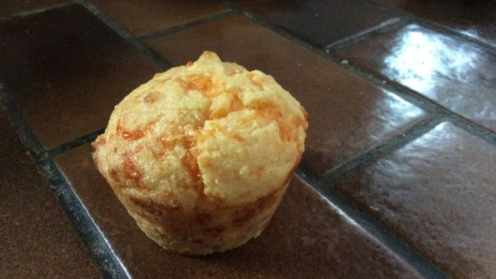

Cheddar Cornmeal Muffins
Description
Delicious, made so many times! Really, you can't go wrong with cheddar.
Ingredients
- 1 1/2 cups unsifted all-purpose flour
- 1/2 cup yellow cornmeal
- 1 tablespoon baking powder
- 1/2 teaspoon salt
- 1 flax egg (combine 1 tbsp of flaxseed meal and 3 tbsp of water and let sit for 5 min)
- 1 cup soymilk
- 1 pinch cayenne
- 1/4 cup butter, melted
- 1 1/4 cups coarsely grated sharp cheddar cheese
Steps
- Heat oven to 425 degrees.
- Grease 12 muffin cups.
- Blend flour, cornmeal, baking powder, salt, and cayenne.
- Beat egg with milk and butter.
- Add to dry ingredients.
- Stir until thoroughly moistened.
- Stir in 1 cup of the cheese and spoon into muffin cups.
- Sprinkle 1 tsp of cheese over each muffin.
- Bake 15 to 20 minutes.
- Serve hot with butter or freeze and reheat right before serving.